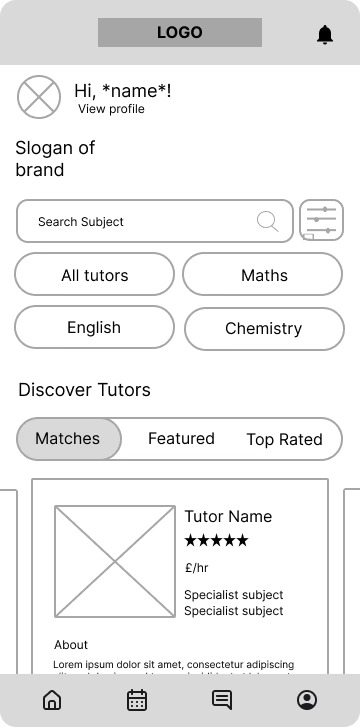
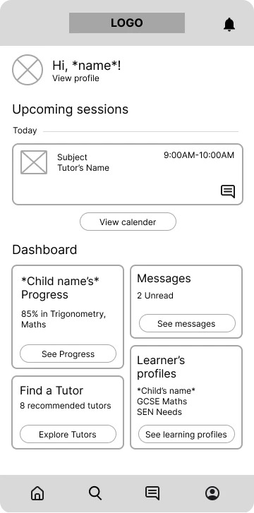
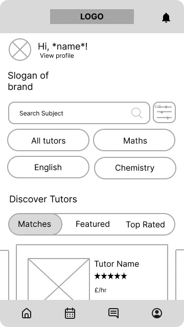
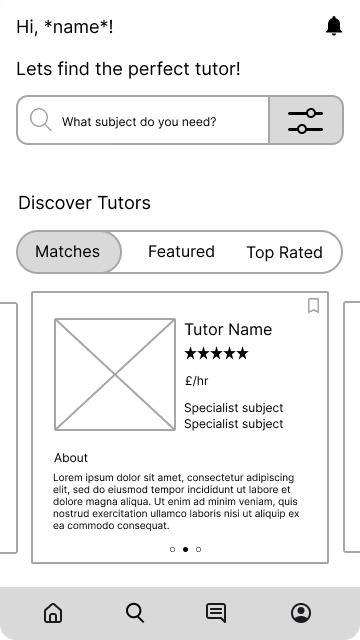
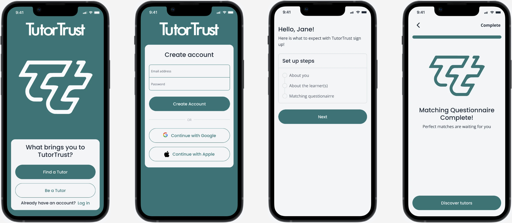
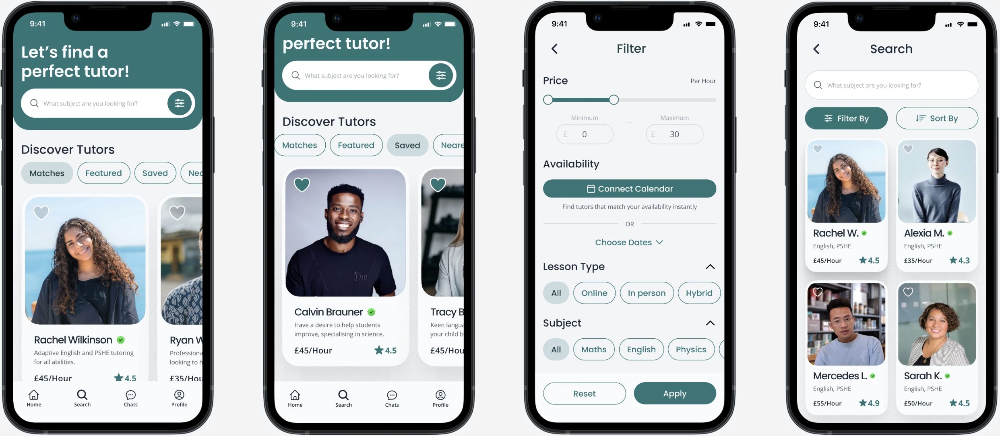
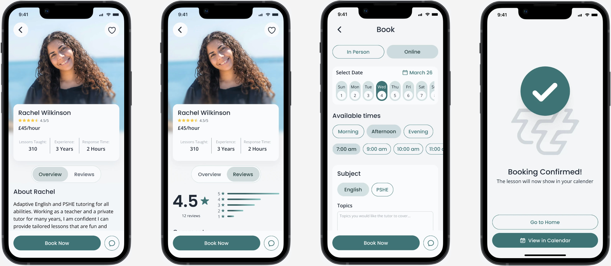
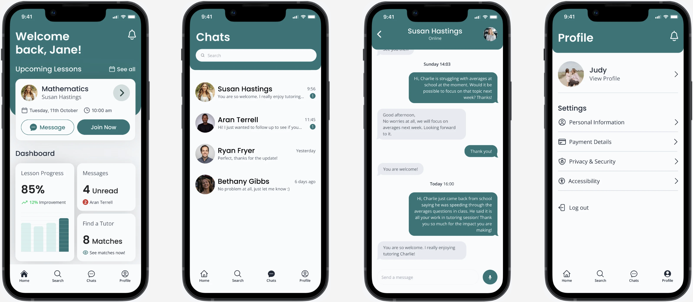
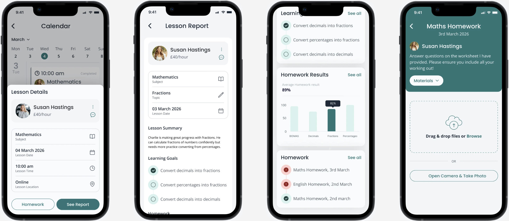

Add
tutortrust-prototype.jpg to assets/projects/
TutorTrust
Trust was the priority. I designed a personalised tutor-matching app around it, end-to-end, from research to a tested prototype, helping parents find, book and track a tutor they can rely on.
View prototypetutortrust-prototype.jpg to assets/projects/
Problem Discovery
Through research with parents and tutors, three real but distinct problems emerged.
Parents struggle to find tutors who meet their child's individual needs, level and subject requirements.
Parents and tutors struggle to find and manage sessions around work, family, and other commitments.
Parents struggle to find trustworthy tutors who show progress, while tutors struggle to prove their credibility.
Research
The goal was to understand real behaviour and decision-making on existing tutoring platforms, not assumptions. Across the interviews, trust and credibility came up more than any other theme.
How can I be sure a tutor will help my child improve
I need an app with easy filtering by subject, experience and availability
Reviews and credentials are so important
I need tutoring to be flexible around my job
If apps are confusing, I just don't use them
I need an app that showcases my credentials clearly
I need a trustworthy tutor without spending ages searching
Parents rarely choose me over someone more experienced
Getting the right tutor is very important
Prioritisation
I weighed the three problems against how often they came up in research and how much design effort each would need to solve properly within a 3-month solo scope.
| Problem | How often it surfaced | Design effort required | Priority |
|---|---|---|---|
| Uncertain outcomes / trust | Highest — the majority of interview quotes | Lower — mostly content, profile structure and visual trust cues | First |
| Finding the right fit | High | Medium — matching logic, filtering and questionnaire flow | Second |
| Busy schedules | Moderate | Higher — calendar sync and scheduling logic, harder to design well end-to-end | Third, scoped down |
Trust took priority because it wasn't a convenience problem, parents said outright they'd rather search longer than risk an untrustworthy tutor. Scheduling was real, but participants described it as an annoyance, not a dealbreaker, so I scoped it down to a "calendar auto-sync" surface rather than designing full scheduling logic.
The Solution
| Priority | Problem | What shipped in the prototype |
|---|---|---|
| 1st | Trust | Profile trust signals, intro video, a "parents say" credibility section |
| 2nd | Fit | An optional matching questionnaire: optional by design, to avoid adding friction before trust was established |
| 2nd | Outcomes | Progress tracking: quick post-lesson questions from tutors, surfaced as reports parents could see |
| 3rd (scoped down) | Schedules | Calendar auto-sync as a supporting feature, not a full booking system |
tutortrust-solution-questionnaire.mp4Finding the perfect tutor
tutortrust-solution-trust.mp4Prioritising trust
tutortrust-solution-progress.mp4Removing uncertainty
Making the matching questionnaire optional was a deliberate trade-off: forcing it upfront would have added a barrier before a parent had any reason to trust the platform yet, the same sequencing logic that shaped the priority order above.
Testing The Hypothesis
I'd designed the homepage around search, assuming that's how parents would use the app most. Testing with 6 participants showed that assumption was wrong: search was a one-off action, not a recurring one, and the search-led homepage was adding friction to ongoing use.
| Assumption | What testing showed | Change made |
|---|---|---|
| Parents search often, homepage should be search-first | Search happens once, then rarely again | Rebuilt homepage as a dashboard; moved search to its own page |
| More filter options on the search bar helps | Extra options cluttered the bar and buried the filter itself | Removed subject quick-actions; made the filter button bigger and clearer |
Before
tutortrust-homepage-before.jpg
After
tutortrust-homepage-after.jpg
Before
tutortrust-search-before.jpg
After
tutortrust-search-after.jpg
Both changes came from watching where real usage diverged from my original assumption — not from a general design review.
Where It Stands
TutorTrust exists as a tested, high-fidelity prototype, not a live product. If it were built further, the metric that would actually test the prioritisation call isn't engagement with any single feature, it's whether parents who view trust signals convert to booking a tutor faster than those who don't, since that's the exact bet the priority order was built on.
tutortrust-final-1.png
tutortrust-final-2.png
tutortrust-final-3.png
tutortrust-final-4.png
tutortrust-final-5.png
Reflection
Every one of the three problems was real, and I could have built a shallow version of all three. Instead, I ranked them against what the research actually said mattered most, and let that ranking decide what got full attention, what got scoped down, and what got left optional. That's the muscle I want to keep using in a product role, not just solving the problems in front of me, but deciding which ones are worth solving first.